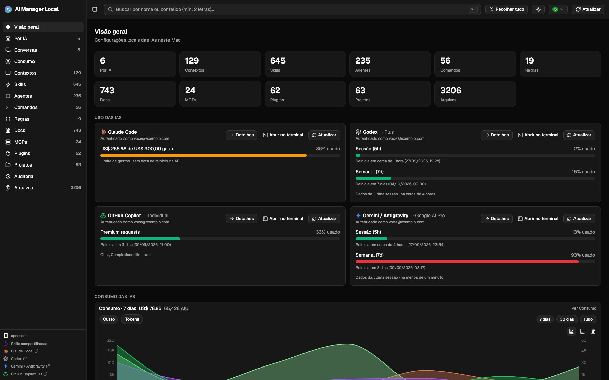
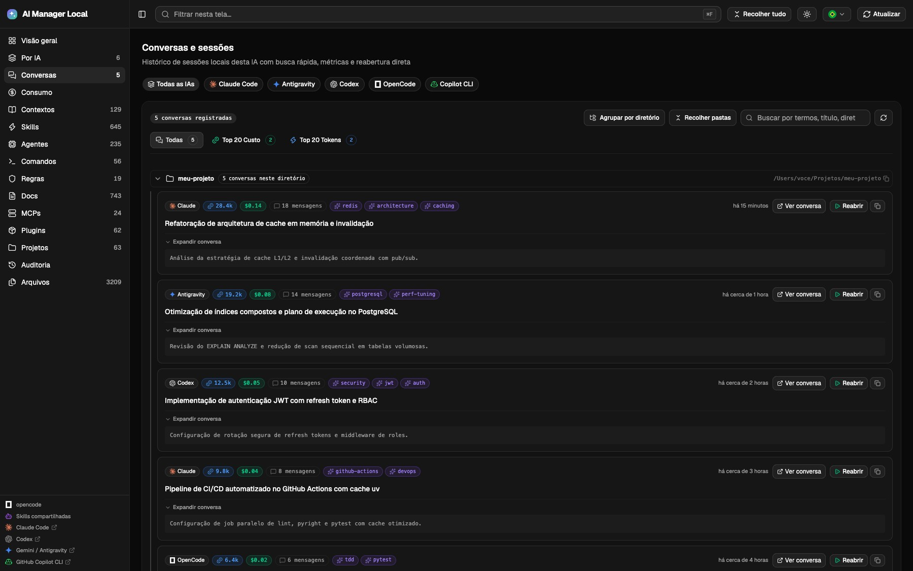

Por IA y por proyecto
Elige la herramienta y mira todo sobre ella; o navega por los repositorios detectados en ~/Projetos, con árbol, MIME, tamaño y autor del último commit.
Funciona 100% en tu máquina
Panel web local para ver y editar todo sobre las IAs instaladas en tu Mac — opencode, Claude Code, Codex, GitHub Copilot CLI, Gemini/Antigravity y Cursor — globalmente y dentro de tus proyectos.

El panel integra estas seis IAs y también detecta otras herramientas con un manifiesto MCP compatible. Las métricas y acciones varían según la herramienta.
Skills, agentes, comandos, reglas, MCPs, plugins y archivos de configuración — por tipo de artefacto, por IA o por proyecto. Con visor, edición segura y auditoría.
Elige la herramienta y mira todo sobre ella; o navega por los repositorios detectados en ~/Projetos, con árbol, MIME, tamaño y autor del último commit.
Markdown con Mermaid, JSON, imágenes y Monaco. Copia de seguridad automática (10 versiones por archivo), detección de conflictos si el archivo cambia externamente y restauración desde la interfaz.
Límites de cuenta y reinicio, costo y tokens leídos de los logs locales — por modelo, proyecto y día — y el top 20 de skills por invocaciones y tokens de contexto.
Activa y desactiva MCPs directamente en la tarjeta, autentica mediante OAuth y sigue la versión instalada vs. publicada, con actualización y copia del comando al terminal.
Un clic abre el CLI en el terminal detectado o en la app nativa, directamente en el directorio del proyecto — ideal para continuar exactamente donde el panel mostró el archivo.
Monitorea el historial completo de sesiones por IA o proyecto, con tokens, costos estimados en dólares, conteo de mensajes, filtros Top 20 y reanudación directa en el terminal.
Búsqueda con ⌘F y resaltado de líneas, atajos de teclado globales para colapsar/expandir (⌘A), tema claro/oscuro (⌘T), actualizar (⌘R), barra lateral (⌘B) e idioma (⌘L).
Barra de estado para terminal con cuotas de tokens (5h, 7d), ventana de contexto, consumo acumulado y diff de Git para Claude Code y Antigravity. Instalador interactivo, vista previa web y copias de seguridad.
Supervisa tus sesiones de IA en tiempo real: tokens consumidos, costo calculado por sesión, clasificaciones Top 20, agrupación por carpeta de proyecto y reanudación instantánea con un clic.

Cada sesión muestra la insignia de la IA, costo estimado en USD, tokens totales y conteo de mensajes directamente en la línea 1, manteniendo los títulos claros y legibles.
Identifica al instante las sesiones que consumieron más presupuesto o tokens de contexto, con filtros dedicados y clasificaciones automáticas.
Sesiones agrupadas automáticamente por directorio de proyecto, con atajo de teclado para expandir o colapsar todas las carpetas a la vez (⌘A).
Expande los mensajes de la conversación con Markdown completo y copia o ejecuta el comando de reanudación nativo (--resume) en tu terminal.
Monitorea el consumo de tus IAs directamente en tu terminal en tiempo real e instala asistentes no configurados utilizando los scripts recomendados por cada documentación oficial.
Añade una barra de estado para Claude Code y Antigravity (AGY) que muestra cuotas de 5h y 7d, ventana de contexto, consumo acumulado y estado de Git. Instala con just statusline con copia de seguridad automática.
La aplicación detecta qué herramientas no están configuradas en tu equipo y sugiere los comandos de instalación oficiales adaptados a tu sistema operativo.
Ejecuta los comandos oficiales directamente en tu terminal o consulta la documentación oficial:
Agente autónomo de programación de Anthropic diseñado para el terminal.
Plataforma agéntica de Google con soporte para subagentes y herramientas MCP.
Agente de ingeniería de software de OpenAI para la línea de comandos.
Asistente de código de código abierto compatible con múltiples proveedores LLM.
Extensión de GitHub CLI para explicaciones y sugerencias de comandos asistidas por IA.
Editor de código centrado en IA diseñado para acelerar el desarrollo de software.
IDE agéntico de Codeium diseñado para colaboración inteligente en tiempo real.
Entorno de desarrollo impulsado por IA con automatización de flujos de trabajo.
El backend sirve la compilación del frontend en 127.0.0.1:4747. Para desarrollo con recarga en caliente,
ejecuta Vite en paralelo (just dev).
gh repo clone mvvitorsilvati/ai-manager-local
cd ai-manager-local
just setup # deps: uv sync + pnpm install
just start # build frontend + iniciar en 4747
just statusline # instalar statusline (Claude/Antigravity)
Sin just: cd backend && uv sync, cd web && pnpm install && pnpm build y luego
uv run --project backend backend/app.py.
Las tarjetas de uso solo aparecen con la IA autenticada localmente — el inicio de sesión se realiza desde la propia herramienta.
El panel muestra lo que las herramientas dejan en disco. Lo que no registran, no se inventa.
Apertura en la app nativa, iconos de aplicaciones, Finder y Keychain son exclusivos de macOS. Fuera de él, el botón del Finder está deshabilitado con un aviso, y la apertura en las terminales instaladas es lo que permanece.
Claude Code, opencode y Antigravity guardan ese historial en logs locales. En Codex y Copilot la pantalla enumera las skills existentes en disco, sin conteo de uso.
El costo y los tokens provienen de los logs a precios de lista, no de tu factura real. Copilot se muestra en AIU, no en dólares.
Apunta AIM_HOME a /mnt/c/Users/<usuario> para leer las configuraciones de Windows.
Windows Terminal no está incluido en la lista de terminales detectadas.
El panel fue diseñado para inspeccionar archivos sensibles: configuraciones de IA, reglas y credenciales que viven en tu máquina. Por eso no envía nada a ningún servidor externo.
Nada expuesto en la red local por defecto; el host solo cambia dentro de un contenedor, por decisión explícita.
Copias de seguridad y auditoría se guardan en ~/.ai_management_local — en tu disco, bajo tu control.
Las conexiones externas solo van a APIs oficiales: cuotas de cuenta y uso, versiones publicadas en npm y páginas de estado — utilizando las credenciales que ya están en la máquina.